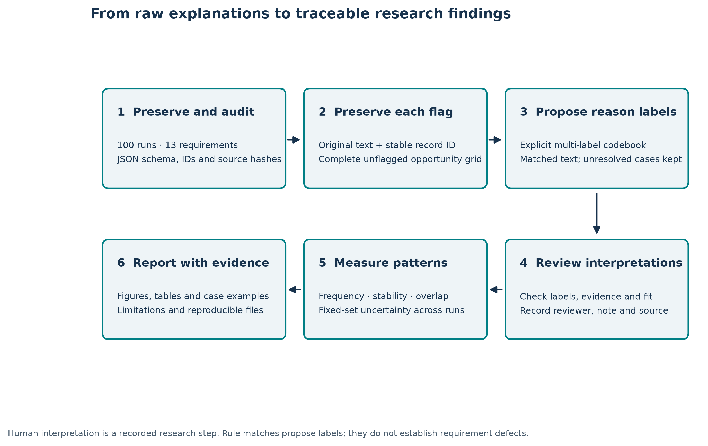
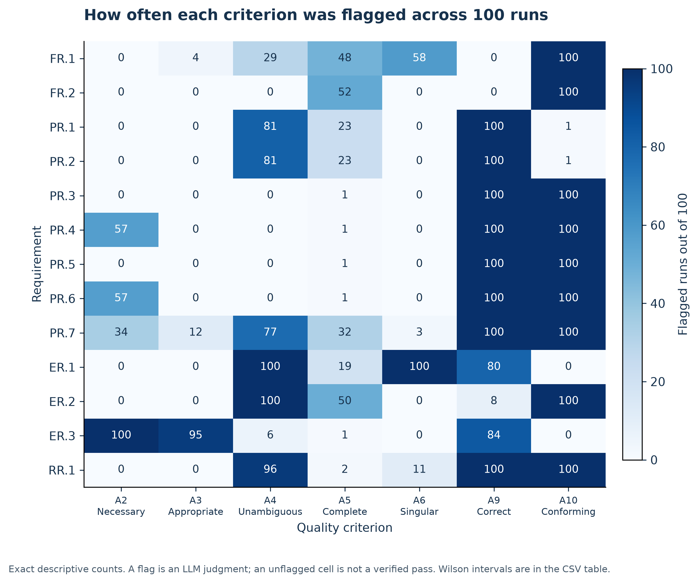
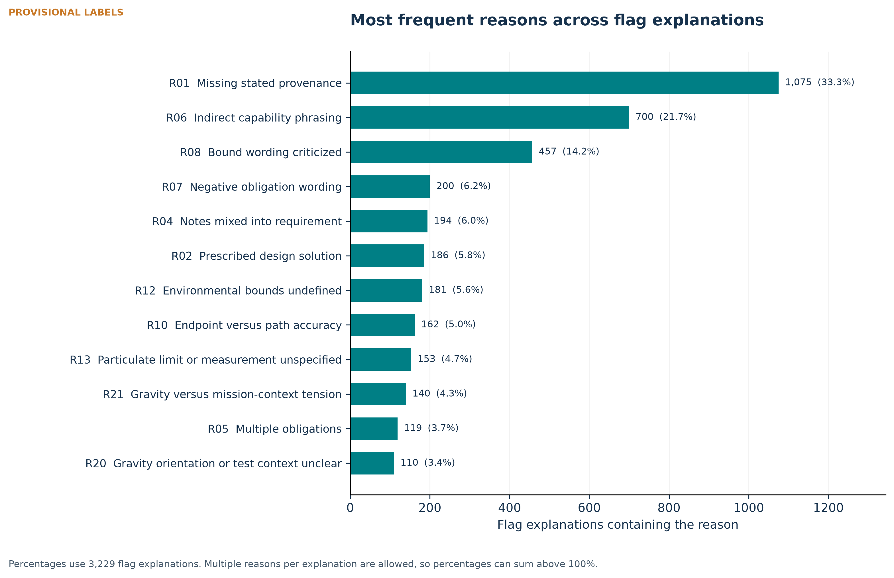
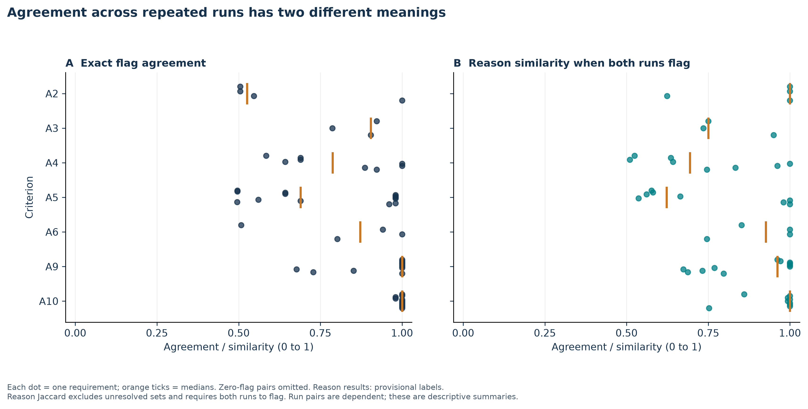
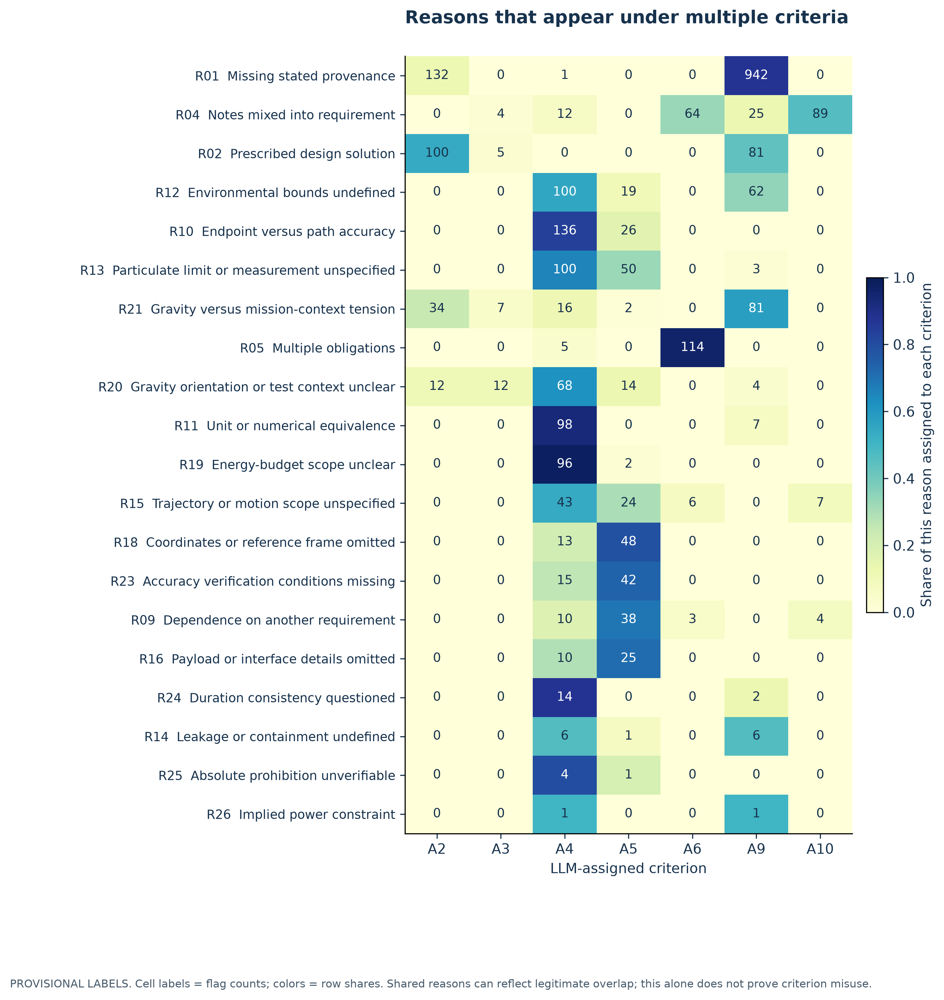
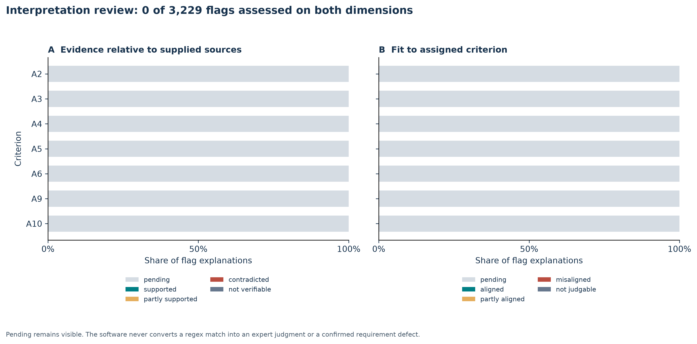

Open the offline review interface · Browse all tables · Scientific table book
**EXPLORATORY DRAFT — INTERPRETATIONS REQUIRE REVIEW**
Worksheet labels have these numerical gaps: [1000]. The actual sheet count is authoritative; a gap is not proof of a missing run, and worksheet order is not a time series. Model identity, complete prompt, sampling settings and random seeds were not supplied. Independence is stated in the task, not verified from execution metadata.
The user-supplied Point Mass PDF provides the reference requirements, context and ConOps. Its exact correspondence to what the original LLM saw is not established. In particular, claims about note placement or quoted wording must be conditional on this source comparison.
Interpretation review separates (a) the reasons expressed, (b) factual support relative to the supplied source, and (c) fit to the assigned criterion. Reviewed overrides preserve suggestions and record reviewer identity, date, source location and rationale. Current state: 0/3,229 explanations have reviewed labels; 8 have no effective reason. An unresolved flag is excluded from reason-set similarity comparisons and never treated as an empty unflagged set. Even a matched explanation can contain a secondary reason that the rules missed.
Flag rates use 100 runs as denominator for each requirement–criterion pair. Reason rates are reported both per all runs and conditional on the criterion being flagged. Within one explanation a reason is counted once. Multi-label totals can exceed the number of explanations. Conditional rates can be unstable with small denominators, which are displayed.
Wilson score intervals describe uncertainty in repeated-run flag/reason probabilities for a fixed requirement under the stated independence assumption. They do not measure uncertainty about whether a defect is real. Aggregate criterion intervals resample complete runs (2,000 draws; seed 20261021), retaining dependence among the 13 fixed requirements. These are pointwise descriptive intervals, not multiplicity-adjusted discovery tests. A degenerate bootstrap interval at a constant count cannot rule out unobserved variation.
Flag agreement counts matching present/absent decisions between run pairs. Reason Jaccard equals the number of shared labels divided by labels in either set. The main reason-similarity plot conditions on both runs flagging; supplemental tables also report at-least-one-positive comparisons and exact agreement including joint absences. These dependent run pairs are descriptive comparisons, not independent statistical replicates. Frequencies are reported alongside consistency to expose prevalence effects.
| criterion_id | flags | opportunities | Rate |
|---|---|---|---|
| A2 | 248 | 1300 | 19.1% |
| A3 | 111 | 1300 | 8.5% |
| A4 | 570 | 1300 | 43.8% |
| A5 | 254 | 1300 | 19.5% |
| A6 | 172 | 1300 | 13.2% |
| A9 | 972 | 1300 | 74.8% |
| A10 | 902 | 1300 | 69.4% |
Table T12 and the worked-example guide identify cases deserving close reading: source absence versus incorrectness, explicit notes versus singularity, intentional design freedom versus ambiguity, and style claims without the approved guide. They are candidate discussion points, not adjudicated conclusions.

Analysis design. Original data and proposed labels are retained separately from reviewed interpretations.

Flag counts for all 91 requirement–criterion pairs. Every cell has denominator 100 runs; zero cells are retained.

Top 12 coded reasons by number of flag explanations. PROVISIONAL LABELS. Each flag contributes at most once to each reason.

Flag agreement includes both-present and both-absent decisions. Conditional Jaccard compares known reason sets only when both runs flag. Dots represent requirements, not independent run pairs.

Only reasons observed under at least two criteria are shown. Cell counts retain each flag; the color scale normalizes within reason. Consult within-requirement overlap tables before interpreting differences.

Review coverage and reviewer-entered judgments. Pending means no judgment has been entered. The initial package has no human-reviewed evidence or criterion-fit ratings.
| Record | Review focus | Question to resolve | Original explanation | Proposed reasons | Status |
|---|---|---|---|---|---|
| Execution999|FR.1|A6 | Notes versus singularity | The supplied PDF already labels Notes 1–4. Does the criticism concern notes, actual additional obligations, or a different input format? | The requirement statement embeds additional non-requirement content ('The path is notional and the mechanical linkage is assumed to be designed separately') within the requirement rather than stating a single capability; such assumptions belong in a note. | R04 | proposed |
| Execution1006|FR.1|A4 | Design freedom versus ambiguity | Note 1 intentionally leaves the path to be determined. What additional boundary would be necessary, and is the LLM imposing a design choice? | The term 'notional' path is not defined or bounded, leaving the allowed trajectory open to multiple interpretations. | R15 | proposed |
| Execution999|PR.1|A9 | Missing source versus incorrectness | The ConOps gives no numerical tolerance. Does this establish incorrectness, or only that correctness cannot be verified from the supplied source? | The ±2.5 mm tolerance value is not traceable to any stated stakeholder need, ConOps element, or supporting analysis in the provided context. | R01 | proposed |
| Execution999|PR.3|A10 | Style-guide evidence | The explanation calls wording prohibited. Which approved style guide establishes that rule? The supplied task only gives the general criterion. | Uses both the prohibited 'shall be able to' construction and the discouraged 'no more than' phrasing. | R06;R08 | proposed |
| Execution999|PR.7|A9 | Operating versus testing context | The context names ISS and PR7 names normal gravity. Does the condition describe on-orbit use, ground testing, a loading direction, or an unsupported assumption? | The system is stated to operate aboard the ISS in microgravity, so imposing 9.81 m/s² Earth gravity contradicts the operational context, and the 3.6 kg mass value is not traceable to any provided source. | R01;R21 | proposed |
| Execution1002|RR.1|A4 | One minute versus two motion limits | Two motions of up to 30 seconds can total one minute. Inspect whether an alleged timing contradiction is real, and what all operations includes. | 'All operations' is undefined, and the 'assuming a maximum operational duration of one minute' clause conflicts with the 30 s limits in PR.3/PR.5, leaving the applicable scope unclear. | R19;R24 | proposed |
The complete original text and exact source IDs are retained in data/flag_explanations.csv and data/annotations.csv.